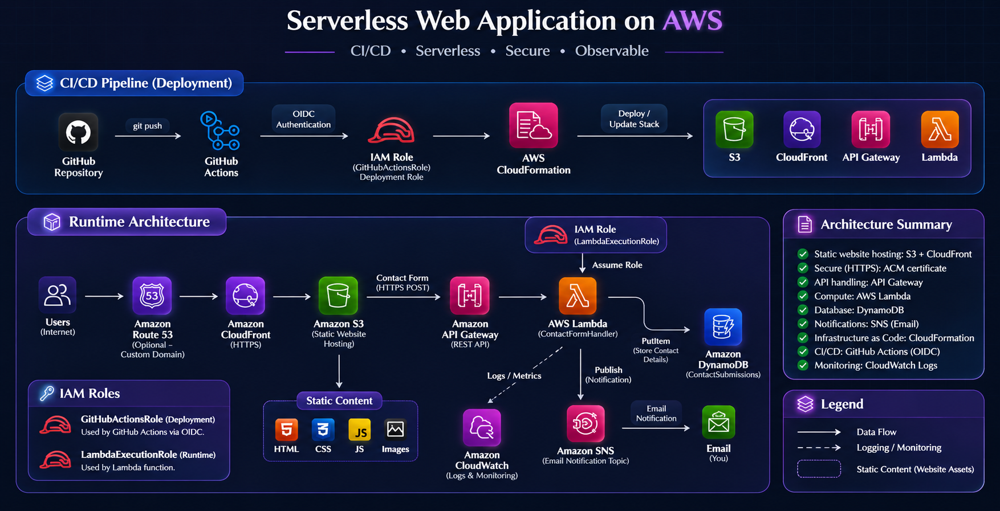
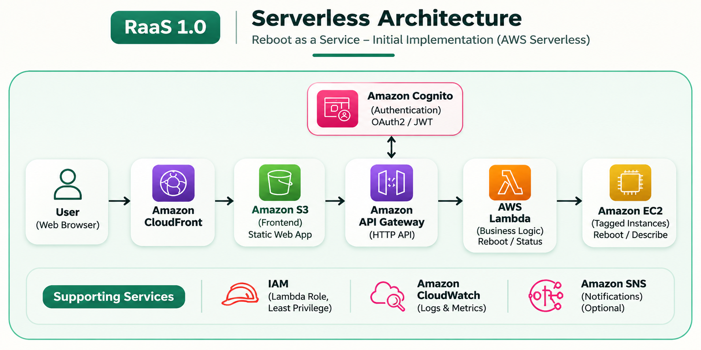
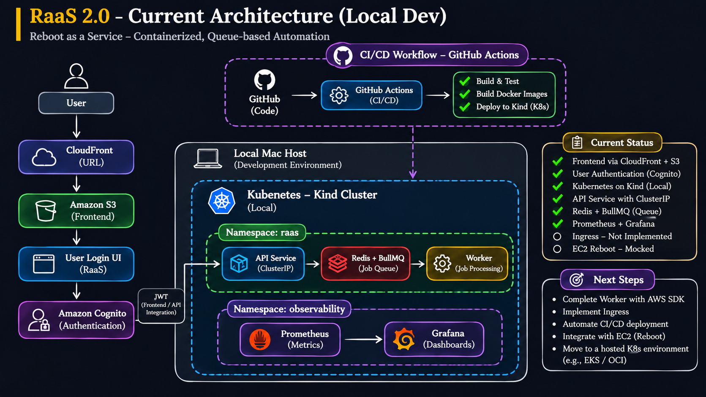

Selected Work
Projects & Cloud
Engineering
Hands-on projects exploring secure AWS infrastructure,
automation, and cloud-native operations.
Project #1: Personal Portfolio
Platform
Serverless
AWS
Infrastructure
as Code
CI/CD
OIDC
CloudFront
+ HTTPS
This is a static website hosted on AWS S3 and
AWS Amplify with a contact form connected via API
Gateway, Lambda, and DynamoDB. The entire setup uses Infrastructure as Code (IaC) with CloudFormation and features a CI/CD
pipeline automated using GitHub Actions.
Architecture Overview
This portfolio is built on a fully serverless AWS architecture.
The frontend is hosted on Amazon S3 and securely delivered worldwide through Amazon
CloudFront over HTTPS. The contact form is powered by Amazon API Gateway and AWS Lambda,
which validates and processes incoming requests before storing the data in Amazon DynamoDB
and sending real-time email notifications through Amazon SNS. The entire infrastructure is
provisioned using AWS CloudFormation and deployed automatically through GitHub Actions with
OIDC authentication, while Amazon CloudWatch provides centralized logging and monitoring.

Technologies Used
- AWS Services: AWS S3, CloudFront, API Gateway,
Lambda, DynamoDB, SNS, CloudFormation, IAM, CloudWatch
- CI/CD and IaC: GitHub Actions, GitHub workflow and
CloudFormation
- Version Control: Git, GitHub
- Frontend: HTML, Tailwind CSS, JavaScript
Features
- S3 and CloudFront hosting with HTTPS.
- Static website hosting with high availability.
- Serverless contact form with data persistence.
- Real-time email notifications on form submission.
- Infrastructure as Code (IaC) for consistent deployments.
- Automated CI/CD pipeline for frontend and backend.
Future Enhancements
- Integrate a blog section with content hosted on DynamoDB.
- Implement a CI/CD pipeline for blog content.
- Add a custom domain with Route 53 and CloudFront.
Project #2: RaaS 1.0 - Serverless
Reboot as a Service
Serverless
OAuth2
IAM
& Access Control
Terraform
GitHub
Actions
JWT
Authentication
RaaS 1.0 explores a serverless approach to self-service EC2 operations
using AWS Lambda and API Gateway, with Amazon Cognito authentication and infrastructure managed
through Terraform. The project focuses on secure API boundaries, identity integration, and
automating cloud operations. Only capabilities implemented and validated in the deployed version
should be treated as live functionality.
Architecture Overview
The intended architecture combines Amazon Cognito, API Gateway,
and AWS Lambda for a serverless application, with a static frontend delivered through S3 and
CloudFront. Terraform and GitHub Actions with OIDC support infrastructure automation and
deployment. The repository and implementation are the source of truth for which
authentication, authorization, and EC2 operations are currently functional.

Technologies Used
- AWS Services: Amazon Cognito, API Gateway, Lambda,
EC2, S3, CloudFront, IAM and CloudWatch
- CI/CD and IaC: GitHub Actions (OIDC-based CI/CD),
Terraform
- Version Control: Git, GitHub
- Frontend: HTML, JavaScript (static web app)
Key Features
- Serverless workflow designed for self-service EC2 operations.
- Amazon Cognito authentication integration.
- Identity and resource-tag authorization concepts.
- Serverless API powered by API Gateway and AWS Lambda.
- HTTPS frontend delivered via CloudFront and S3.
- Infrastructure automation with Terraform and GitHub Actions.
Future Enhancements
- Multi-account and multi-region EC2 support.
- Automated group creation and dynamic role mapping.
- Automatic EC2 tagging to eliminate manual ownership configuration.
- Approval-based workflows for sensitive actions.
- Scheduled reboot operations and enhanced auditing.
- Custom domain support with ACM and Route 53.
Project #3: RaaS 2.0 – Cloud Native
Reboot as a Service
Kubernetes
Cloud
Native
DevOps
Async
Processing
Failure
Testing
Observability
RaaS 2.0 evolves the original RaaS concept into a containerized, asynchronous application. An
API submits jobs to a Redis/BullMQ queue, and a dedicated worker processes them in a Kubernetes
environment. EC2 reboot actions are simulated in this project, allowing the focus to remain on
job processing, workload health, observability, and failure recovery.
Architecture Overview
The public frontend is hosted on Amazon S3 and delivered through CloudFront, with Amazon
Cognito used for frontend authentication. The application architecture consists of a
containerized API, Redis/BullMQ for asynchronous job handling, and a separate worker,
deployed and tested locally with Kubernetes Kind. Prometheus and Grafana provide
observability. The public demo showcases the frontend and authentication flow; backend job
processing runs in the project environment, and EC2 operations are simulated.

Technologies Used
- AWS Services: Amazon Cognito and supporting AWS
services.
- Container Platform: Docker and Kubernetes Kind.
- Application: Containerized API service, worker
service and Redis queue.
- Observability: Prometheus and Grafana.
- CI/CD & IaC: GitHub Actions and Terraform.
- Version Control: Git and GitHub.
Key Features
- Cloud-native application architecture.
- Dockerized API and worker services.
- Amazon Cognito authentication on the public frontend.
- Asynchronous job processing using Redis and BullMQ.
- Kubernetes deployment and service networking.
- Infrastructure automation and operational troubleshooting.
Engineering Focus
- Asynchronous job submission and processing.
- API readiness during Redis dependency failures.
- Kubernetes pod health and resource limits.
- Grafana recovery after an OOMKilled event.
- CloudFront cache invalidation and frontend updates.